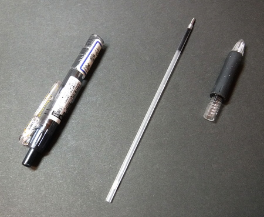
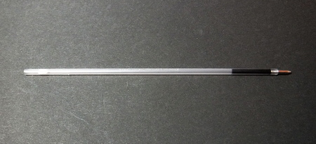

ティップス
便利な小道具 ボールペンの芯を再利用したネイルノットの補助具
フライラインとバッキングライン、あるいはフライラインとリーダーを結ぶ際に用いられる、「ネイルノット」という結び方があります。その結び方をするときに、空になったボールペンの芯を取っておいて使うと、簡単に双方のラインを結ぶことができます。


参考：もうすぐなくなりそうなボールペンの芯
ネイルノットには、道具を使わない方法、そして各種の道具を使う方法など、多数のやり方があるのですが、私は下記のビデオクリップのような方法で行っています。
How to tie a nail knot using a tube.
出典： http://ww1.flyfishingtc.com
YouTube 画面の赤丸の所をクリックすると、英文字幕が出ます。
出典： http://ww1.flyfishingtc.com
YouTube 画面の赤丸の所をクリックすると、英文字幕が出ます。
アメリカのフライタックルショップなら、かの国のことですから、専用の小道具が（恐ろしい値段で....）販売されているのではと想像されますが、使い切ったボールペンの芯ならば、出費はタダ同然です。カッターナイフで、ペン先の金属部分とインクが充填されていた樹脂部分とを切り離しておくと良いでしょう。
ただし、色が半透明でわかりにくく、現場で落としたりすると見つけるのに苦労するので、一方の端に赤いビニールテープを貼り付け（穴を塞がないように！）、１センチくらい出してカットしておくと見つけやすくなると思います。
2020/12/20
ティップス 目次へ
サイトマップ
ホームへ
お問い合わせ